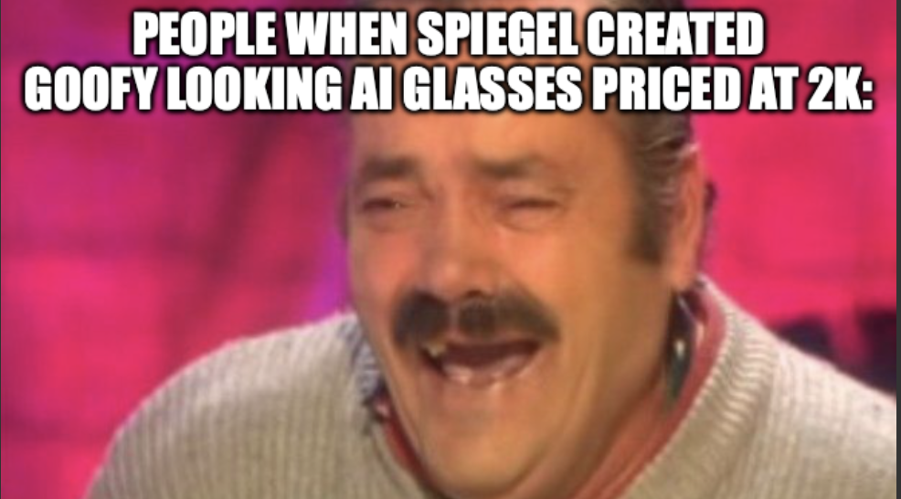

On June 16, 2026, Snap CEO Evan Spiegel walked onstage at the Augmented World Expo in Long Beach, California, and debuted a pair of augmented reality glasses called Specs. Fully self-contained. See-through color display. Contextual AI. Hand and voice control. Built-in camera, built-in speaker. Games, navigation, work, video: the works.
The price: $2,195. The weight: conspicuous. The look: somewhere between a welding visor and a prop from a low-budget sci-fi film.

"El Risitas" — Jesús Quintero interview with Juan Joya Borja, Ratones Coloraos (2007)
Memes arrived before the press releases. Snap's shares fell after the announcement; MarketWatch reported a nearly 10% drop Tuesday and another 8% Wednesday. By June 18th, the two-day slide had reached roughly seventeen percent — erasing hundreds of millions in market cap. Diehard AR enthusiasts, the people who want this future, called them too expensive and too bulky to matter. Everyone else was less diplomatic. The consensus: nobody asked for this.
This isn't Snap's first attempt. A decade ago, the company launched Spectacles, camera-equipped sunglasses that sold poorly and led to a roughly $40 million charge for excess inventory and purchase commitments. The new bet is bulkier, vastly more expensive, and less conventionally stylish than the original consumer Spectacles. If the first attempt was a polite nudge from the market, Specs was the market screaming through a megaphone.
Snap isn't alone. Google previewed Project Glass in 2012, opened Glass to the public in 2014, halted the Explorer program in 2015, and ended sales of Glass Enterprise Edition in 2023 after a long retreat. Microsoft built HoloLens, genuinely impressive engineering that never crossed from enterprise and developer showcase into mainstream consumer habit; Microsoft stopped producing HoloLens 2 in 2024. Even Apple launched Vision Pro into narrower demand than the hype suggested, with reports later that year saying production had been scaled back.